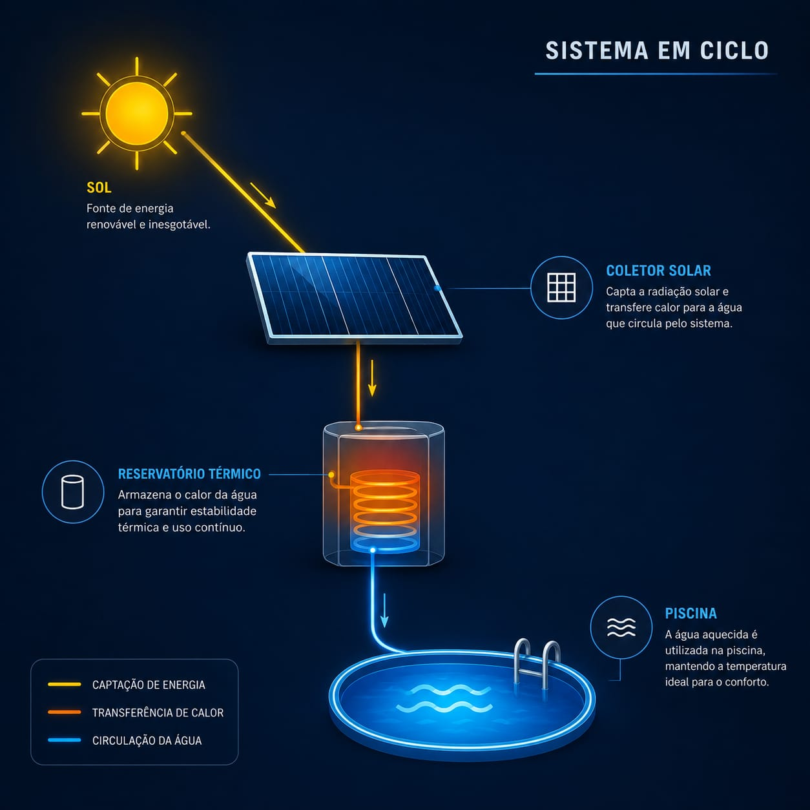

Alto consumo
Aquecedores convencionais exigem muita eletricidade em períodos prolongados.
PROJETO INTEGRADOR • COLÉGIO ESTADUAL DO PARANÁ
Uma solução de engenharia que transforma luz solar em conforto térmico, eficiência e aprendizado prático.
Conheça o projeto01 / O DESAFIO
Manter a piscina em uma temperatura adequada demanda energia constante. Nosso sistema reduz desperdícios e decide, com dados, quando agir.
Aquecedores convencionais exigem muita eletricidade em períodos prolongados.
Sem leitura de temperatura e fluxo, a energia pode circular sem necessidade.
O consumo de fontes não renováveis aumenta a emissão indireta de CO₂.
Sensores e programação fazem o sistema operar apenas no momento certo.
02 / ECOSSISTEMA

Capturam radiação e transferem calor para a água.
Fornecem energia elétrica para automação.
Armazena calor para maior estabilidade térmica.
Leem temperatura, nível e fluxo continuamente.
Interpreta os dados e aciona o sistema.
Circulam a água na condição mais eficiente.
03 / FÍSICA APLICADA
A radiação solar atravessa a atmosfera e atinge o coletor. Sua superfície escura absorve mais comprimentos de onda e transforma essa energia em calor.
Radiação incidente → absorção térmica
Disco de Newton: a luz branca reúne as cores visíveis.
04 / LÓGICA DO SISTEMA
O controlador compara dados ambientais e térmicos para escolher o melhor ciclo de circulação.
Decisão automática: se o coletor estiver mais quente que a água, a bomba liga. Ao atingir a temperatura de conforto, o ciclo é interrompido.
05 / HARDWARE
Mede água, ambiente e coletor.
Confirma a circulação no circuito.
Evita a operação com volume insuficiente.
Processa regras e leituras.
Aciona equipamentos com segurança.
Movem e direcionam a água.
06 / EXPERIÊNCIA INTERATIVA
Ajuste as variáveis e veja uma estimativa de aquecimento após um ciclo solar.
Temperatura estimada
29.1°C● Condições ideais — bomba ativada
07 / IMPACTO
redução estimada no uso de energia convencional
de CO₂ evitadas por ano*
de monitoramento inteligente
*Estimativa ilustrativa baseada na substituição parcial do aquecimento elétrico por energia solar.
08 / INCLUSÃO
Contraste reforçado, foco visível, navegação por teclado, controles de fonte e descrições alternativas fazem parte da experiência — não são um extra.
09 / CONCLUSÃO
O projeto une óptica, programação, robótica e energia limpa em uma aplicação real: reduzir consumo, ampliar o conhecimento e incentivar escolhas sustentáveis no CEP.
Voltar ao início